Statistics Unit
2.1 Number Lines
Graph each point on the given number line.
-
A = 1.3B = 2.5C = 1.4D = 1.1
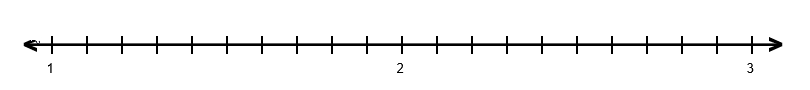
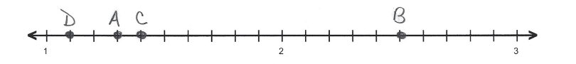
-
A = 8.25B = 9.25C = 10.5D = 7.75

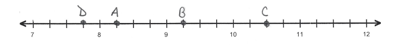
-
A = 4.5B = 3.5C = 6.5D = 2.5
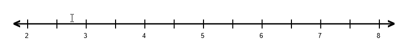
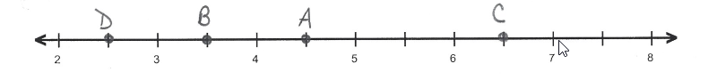
-
A = 3.375B = 4.25C = 3.875D = 3.5
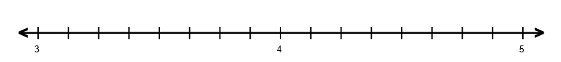
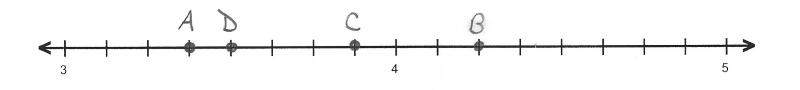
-
A = 6.8B = 6.6C = 5.2D = 6.4
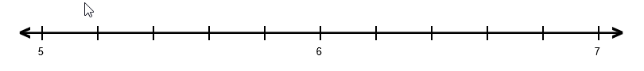
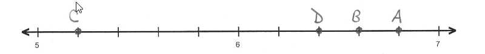
-
A = -1.4B = -2.8C = -2.6D = -1.2
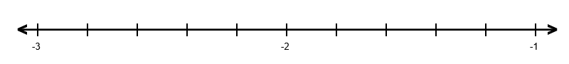
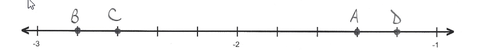
-
A = -4.667B = -2.667C = -1.333D = -3.333
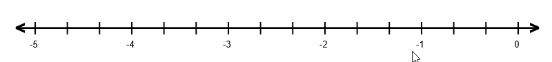
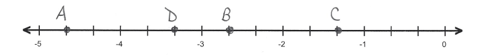
-
A = -4.25B = -3.25C = -2.5D = -5.75
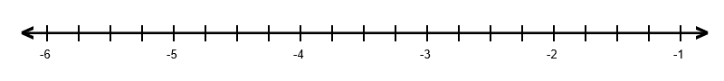

-
A = -3.5B = -4.5C = -6.5D = -5.5
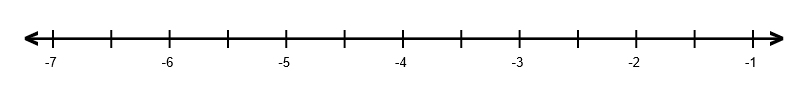
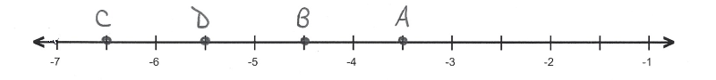
-
A = -8.8B = -7.5C = -7.1D = -8.3
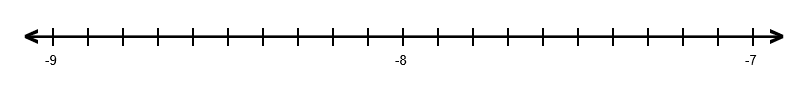
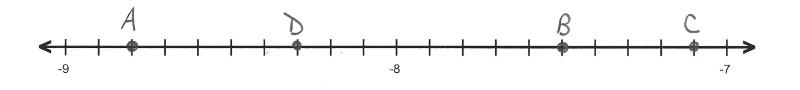
-
Graph each number in the list on the given number line.
\(375 \%,-\frac{42}{11}, \sqrt{33},-0.19, \frac{9}{8}\)
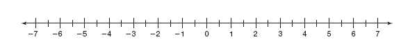
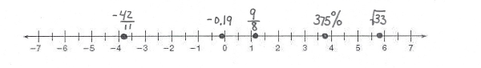
-
Graph each number in the list on the given number line.
\(-0.45, \frac{4}{5},-1 \frac{3}{10},-\frac{7}{4}, \frac{\pi}{6}\)
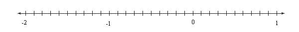
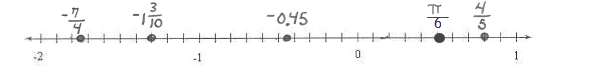
-
Label the number line with an appropriate scale, then locate the following numbers on the number line. Clearly label the scale and each point at its location.
\(90,35,-25,-10,62\)
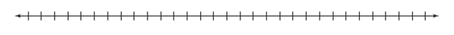
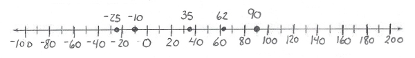
-
Label the number line with an appropriate scale, then locate the following numbers on the number line. Clearly label the scale and each point at its location.
\(-0.75,0.49,-0.33,0.2,1.1\)
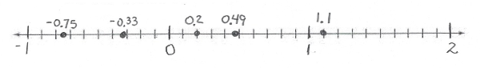
-
Label the number line with an appropriate scale, then locate the following numbers on the number line. Clearly label the scale and each point at its location.
\(5594,1298,4300,3050,3975\)
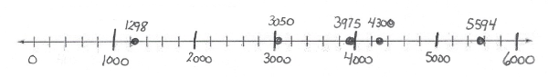